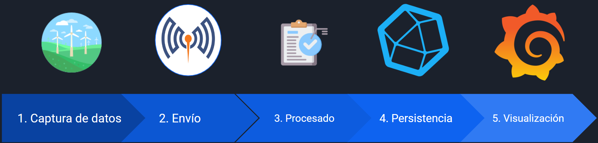
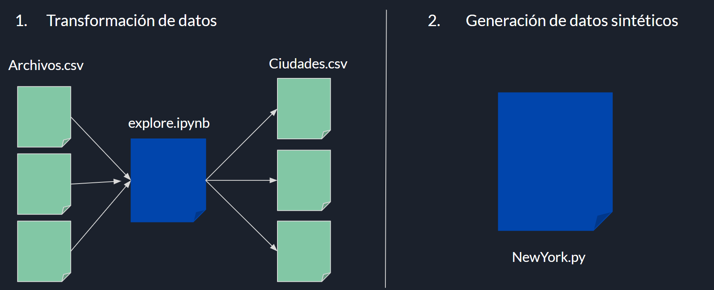
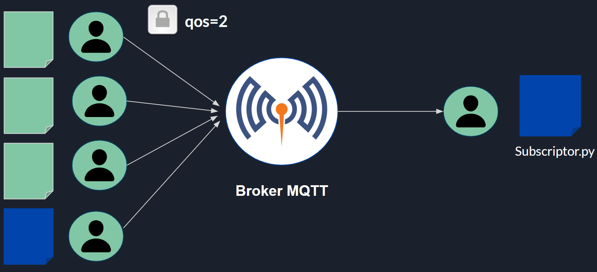
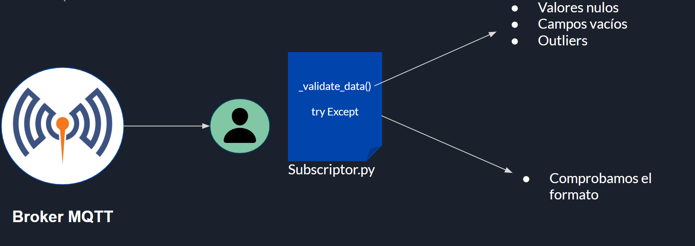
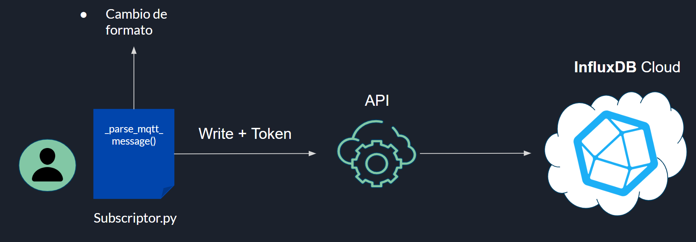
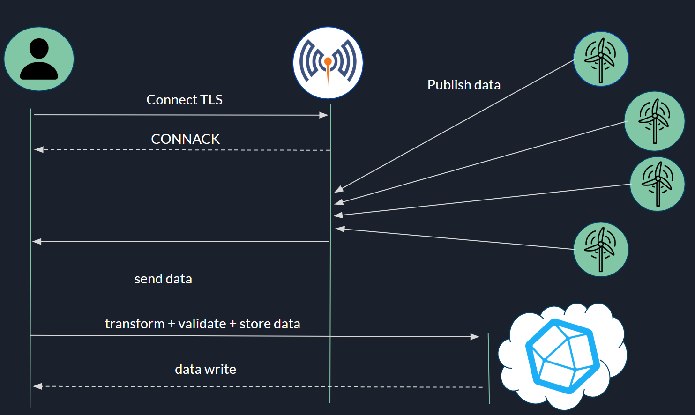
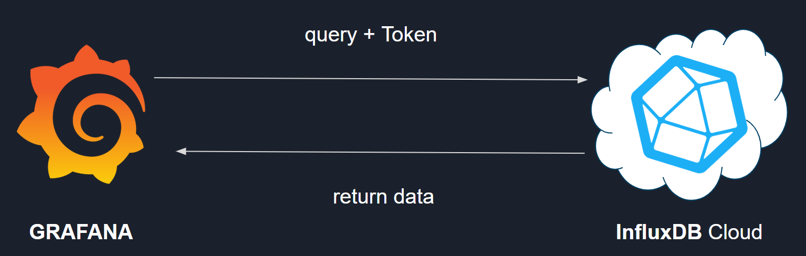

Proyecto: Sedes en USA
Descripción
Este proyecto conecta un broker MQTT con una base de datos InfluxDB. El objetivo es recibir datos meteorológicos de diferentes ciudades de Estados Unidos publicados en MQTT, validar los datos y enviarlos a InfluxDB para su almacenamiento y posteriormente hacer un análisis con Grafana. Utilizamos varios publicadores para enviar los datos y un suscriptor para procesarlos y almacenarlos.
Objetivo
Este proyecto busca facilitar el monitoreo de datos meteorológicos en tiempo real, permitiendo análisis visuales efectivos para toma de decisiones en diferentes ciudades de Estados Unidos.
FASES

1. Captura de datos: 
- Hemos explorado unos Dataframes de Kaggle sobre generadores eólicos, hemos analizado que datos pueden aportar más valor, y hemos generado un archivo csv nuevo con los datos de la ciudad.
- Hemos generado un archivo de python para generar datos sintéticos.
2. Envío:  Para el envío utilizados MQTT, lo que hacemos es mandar desde los archivos de Ciudad.py, de la carpeta publishers. Empleamos el qos2, Quality of Service 2, para conectarse al broker mqtt luego se mandan los datos al subscriptor.py.
3. Validación:  Antes de la almacenar los datos, se validan los datos que los suscriptores no contentan ni valores nulos, vacíos o que no sean Outliers. También, se comprueba el formato del mensaje, para más detalle clicke aquí.
4. Persistencia de datos:

Para la persistencia de datos, en el archivo de subscriptor primero hemos formateado el formato del mensaje recibido para que se pueda enviar a Influx correctamente. Luego, hemos empleado la API-REST de InfluxDB le hemos indicado la acción que queríamos hacer, escribir, y le hemos pasado nuestro token para validarnos.
Funcionamiento del envío de datos
 Esta imagen muestra el funcionamiento del proyecto desde el envío hasta la persistencia del sistema.
5. Visualización de datos:  Para la visualización de datos en Grafana, hemos hecho una query de los datos a visualizar a InfluxDB, le hemos pasado nuestro token para que nos valide.
Instalación
Clonar el repositorio:
git clone <https://github.com/rdo164/XR-CTR.git>
Instalar las dependencias:
pip install -r requirements.txt
Estructura del Proyecto
- subscritor.py: Script principal que establece la conexión con el broker MQTT y procesa los mensajes recibidos.
- requirements.txt: Archivo con las dependencias necesarias para ejecutar el proyecto.
- certs/: Directorio que contiene los certificados necesarios para la comunicación segura con el broker MQTT.
- publishers: Directorio con los los archivos de publicación.
- LVegas.csv, Portland.csv, Dallas.csv, Denver.csv, Seattle.csv : Archivos CSV con datos de ejemplo para la publicación en MQTT.
- NewYork.py: Script para generar y publicar datos sintéticos en MQTT.
Requisitos
- Python 3.7 o superior
- pip (gestor de paquetes de Python)
- Conexión a internet para instalar las dependencias
- Certificados de seguridad para el broker MQTT (ubicados en ./certs/)
- Instalación de dos2unix
Archivos Principales
subscritor.py
Este script principal se encarga de:
- Conectarse al broker MQTT.
- Suscribirse a un tópico (home/#).
- Procesar los mensajes recibidos.
- Validar los datos.
- Enviar los datos a InfluxDB.
NewYork.py
Este script genera datos sintéticos y los publica en el broker MQTT. Es útil para pruebas y desarrollo.
Ciudad.py
Este script recorre los datos de los archivos csv correpondientes a su ciudad.
Certificados
Los certificados necesarios para la comunicación segura con el broker MQTT deben estar ubicados en el directorio ./certs/:
- ca.crt: Certificado de la autoridad certificadora.
- LasVegas.crt, LasVegas.key: Certificados y claves para la ciudad de Las Vegas.
- Portland.crt, Portland.key: Certificados y claves para la ciudad de Portland.
- Dallas.crt, Dallas.key: Certificados y claves para la ciudad de Dallas.
- Denver.crt, Denver.key: Certificados y claves para la ciudad de Denver.
- Seattle.crt, Seattle.key: Certificados y claves para la ciudad de Seattle
- NewYork.crt, NewYork.key: Certificados y claves para datos sintéticos.
Para generar los certificados automáticamente acceder mediante certs, al archivo certificados.sh:
En caso de tener dos2unix instalado, emplea los siguientes comandos, sino instalalo:
dos2unix certificados.sh
bash certificados.sh
Ejecución
Ejecución del Script Principal
Para iniciar la conexión con el broker MQTT y comenzar a procesar los mensajes:
docker-compose up -d
python3 subscritor.py
1. Publicar Datos desde CSV
Para publicar datos desde los archivos CSV LVegas.csv, Portland.csv, Dallas.csv, Denver.csv, Seattle.csv:
python3 Portland.py
python3 Denver.py
python3 Dallas.py
python3 Seattle.py
python3 LasVegas.py
Generar y Publicar Datos Sintéticos
Para generar y publicar datos sintéticos:
python3 NewYork.py
Estructura del Mensaje MQTT
Los mensajes publicados en MQTT deben seguir el siguiente formato:
Temperatura:
Ejemplo:
Temperatura: 25.5, Tiempo: scattered clouds, Direccion_viento: 180, Velocidad_viento: 5.5
3. Validación de Datos
El script valida los datos recibidos según los siguientes criterios:
- Temperatura debe estar entre 0 y 50 grados Celsius.
- Direccion_viento debe estar entre 0 y 360 grados.
- Velocidad_viento debe estar entre 0 y 100 m/s.
2. Envío de Datos
Para el envío de datos mediante MQTT utilizando certificados TLS/SSL, hemos implementado el uso de SAN (Subject Alternative Name). Mediante SAN, vinculamos el certificado a una IP específica.
Para el servidor, hemos utilizado la IP 0.0.0.0 para que pueda escuchar desde diferentes IPs, mientras que cada cliente tiene su IP específica; en nuestro caso, todos los publicadores tienen las IPs 192.168.208.x.
En el archivo de configuración de Mosquitto (mosquitto.conf), también hemos añadido la directiva bind_address 0.0.0.0 para que el contenedor del broker MQTT pueda escuchar desde cualquier IP. Además, en cada certificado de los publicadores, hemos incluido el nombre de la ciudad, lo que nos permite identificar en todo momento quién está conectado.
4. Persistencia de Datos
De cara a la persistencia de datos del proyecto, hemos empleado InfluxDB porque los datos que vamos a enviar son series temporales. Para el envío hemos utilizado la API de influxDB para escribir los datos, y luego posteriormente desde el Data Explorer comprobar si los datos se habían enviado correctamente.
Sobre los datos la clasificación de los datos a la hora de insertarlos es la siguiente:
- El Bucket lo hemos llamado tiempo.
- El measurement = viento.
- Y la etiqueta la localización del lugar, para que luego de cara a la visualización tengamos la información clasificada. También cabe la posibilidad de que el cliente quiera visualizar diferentes localizaciones.
5.Visualización de datos.
Para la visualización de los datos, hemos empleado InfluxDB y Grafana, que en conjunto permiten una visualización efectiva 1. Exploración de Datos en InfluxDB:
- Utilizando el Data Explorer de InfluxDB, es posible verificar que los datos se están enviando y almacenando correctamente. Esto asegura que los datos están disponibles para su análisis y visualización. Integración con Grafana Configuración de Grafana:
Data Source: Se ha configurado InfluxDB como una fuente de datos en Grafana, proporcionando las credenciales y la URL de conexión.
Dashboards: Hemos creado dashboards específicos para visualizar los datos meteorológicos de cada ciudad. Cada dashboard puede incluir gráficos de series temporales para la temperatura, dirección del viento y velocidad del viento.